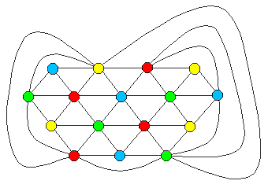

AKIM257's Summary on Graphs
What is a Graph?
A graph is a pairing of a set of V vertices (or nodes) and E edges (connections between vertices).
Types of Graphs
There are many kinds of graphs (in mathematics they can be described according to coloring, as Hamiltonian, factorable, etc.) but in class we primarily discussed:
- Directed Graphs
- Undirected Graphs
- Cyclic vs Acyclic Graphs

Other Sources
If you want to learn more about graphs I recommend A First Course in Graph Theory.